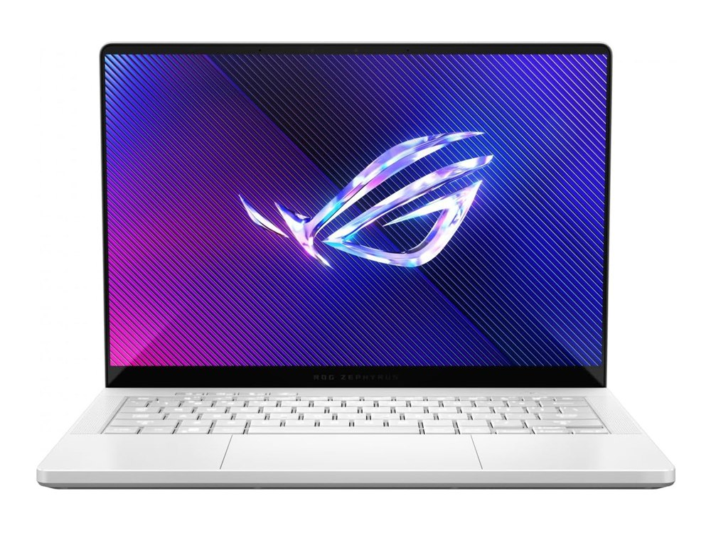

Ficha técnica
| Procesador | AMD Ryzen 9 8945HS |
|---|---|
| Gráficos | NVIDIA RTX 4070 · 8 GB |
| Memoria | 32 GB LPDDR5X |
| Almacenamiento | 1 TB SSD |
| Pantalla | 14" OLED 3K · 120 Hz |
| Peso | 1,72 kg |
| Autonomía | 10 h según el fabricante |
| Sistema operativo | Windows 11 |
| Precio | 1799 € orientativo |
Para quién es
Es de los mejores del catálogo en el gaming: 92 de 100. Para moverse se queda en 74 de 100. Pesa 1,72 kg. Cuesta 1799 €, entre los cuatro más caros del catálogo.
- Encaja si lo que más te importa es jugar con soltura, y el presupuesto llega a 1799 €.
- Busca otra opción si lo que prima es la portabilidad: aquí saca 74 de 100.
Notas por uso
Escala de 0 a 100. En el comparador se recalculan según el perfil que elijas.
Alternativas por precio
Los tres modelos del catálogo que más se acercan a su precio:
- MacBook Air 15" (M5)−70 €
- Samsung Galaxy Book5 Pro 14"−100 €
- MacBook Air 13" (M5)−370 €
Compáralo con otro modelo
Abre el comparador con este portátil ya cargado y enfréntalo a cualquiera de los 34.
Abrir el comparador